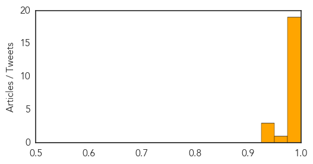

Cholera
30-Day Web Trend
0 alerts, 0 warnings

30-Day Twitter Trend
0 alerts, 0 warnings
Article Locations

Article Confidences

Top Articles:
-
No articles found for Apr 16, 2014
Top Tweets:
-
No tweets found for Apr 16, 2014
Ebola
30-Day Web Trend
27 alerts, 0 warnings
30-Day Twitter Trend
17 alerts, 0 warnings

Article Locations
Article Confidences
Top Articles:
- 1.000
- Guinea says few new Ebola cases, outbreak nearly under control
- 1.000
- Ebola Outbreak 'Under Control,' No New Cases
- 1.000
- As African Ebola Outbreak Spreads, Hopes for Vaccine Remain Years Away
- 1.000
- Ebola under control in Guinea After 130 people killed
- 0.999
- Taking preventive action to stop the Ebola outbreak in West Africa
- 0.999
- More medical assistance from EU to West Africa
- 0.999
- Liberia's first Ebola patient in over a month dies
- 0.999
- Ebola Outbreak Almost Under Control
- 0.999
- EU increases medical assistance to West Africa
- 0.999
- Ebola virus in Africa outbreak is a new strain
- 0.998
- We're aliens in Ebola's world
- 0.998
- Ebola Virus in Africa Outbreak is a New Strain
- 0.998
- Ebola virus in Africa outbreak is a new strain
- 0.997
- UNICEF, WHO and Red Cross Joined Hands to Spread Awareness of Ebola in West African Countries
- 0.996
- Ebola Could Spread Out of Africa, Doctors Admit
- 0.995
- West Africa Ebola Is Novel Strain
- 0.993
- Ebola Claims More Victims in West Africa
- 0.987
- GIMPA to tackle Ebola fears in public education seminar
- 0.977
- Surviving Ebola, Overcoming Stigma
- 0.968
- New Ebola Strain Causing West Africa Outbreak
- 0.946
- Gambia bans flights from Ebola-hit nations. Health. Tengrinews.kz
- 0.942
- iafrica.com Gambia blocks 'ebola flights'
- 0.927
- News in Brief: Week of April 14-18
Top Tweets:
- 0.760
- http://t.co/otsSYIZI4W. @NEJM Emergence of a new Zaire Ebola virus clade in Guinea.